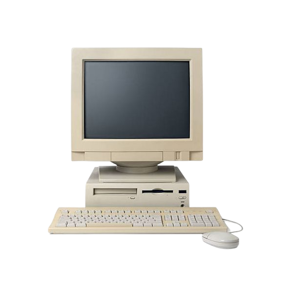

Mempelajari cara kerja komputer dari sisi unit operasional, hubungan antar komponen hardware, hierarki memori, antarmuka, hingga transmisi sinyal kontrol sistem.

Sistem komputer adalah suatu kesatuan yang terdiri atas perangkat keras (hardware), perangkat lunak (software), dan pengguna (brainware) yang bekerja sama untuk mengolah data menjadi informasi. Dalam organisasi komputer, fokus utama adalah bagaimana komponen perangkat keras saling berinteraksi untuk menjalankan proses komputasi secara efisien.
Sistem komputer terdiri dari tiga komponen utama: Hardware (fisik), Software (program/instruksi), dan Brainware (manusia/pengguna).
CPU bekerja menggunakan siklus berulang yang dinamakan Siklus Instruksi (Instruction Cycle):
Secara internal, arsitektur dasar inti CPU terbagi menjadi tiga blok utama:
Hierarki memori adalah penyusunan tingkatan memori komputer berdasarkan relasi terbalik antara kecepatan akses dengan kapasitas penyimpanan.
Semakin ke atas, memori memiliki waktu respons (latensi) paling minim namun kapasitasnya paling terbatas dan biaya produksinya tinggi.
| Karakteristik | Register | Memori Cache | Memori Utama (RAM) |
|---|---|---|---|
| Kecepatan | Sangat Tinggi (< 1 nanodetik) | Tinggi (1 - 10 nanodetik) | Sedang (10 - 60 nanodetik) |
| Kapasitas | Beberapa Byte s.d KiloByte | Beberapa MegaByte (MB) | GigaByte (8GB - 64GB+) |
| Fungsi | Menyimpan data instruksi aktif yang dieksekusi detik itu juga. | Menyimpan salinan data RAM terpopuler agar CPU tidak menunggu lama. | Menampung data program aktif dan sistem operasi secara volatile. |
Ketiga bus ini merupakan interkoneksi utama (System Bus) penyalur sinyal listrik digital di motherboard:
Data mentah masuk melalui unit input, dimuat ke memori, diolah oleh algoritma CPU, lalu dikirim ke media luaran untuk dibaca pengguna.
Pipelining adalah teknik arsitektur perangkat keras di mana prosesor memecah pengerjaan instruksi menjadi beberapa tahapan sub-proses independen, sehingga beberapa instruksi dapat diproses **secara paralel/bersamaan** pada fase siklus yang berbeda.
Sebagai analogi, ini seperti lini perakitan pabrik mobil; selagi mobil pertama memasuki tahap pengecatan, mobil kedua sudah mulai dirakit di tahap pengelasan rangka tanpa harus menunggu mobil pertama selesai total. Hal ini melipatgandakan produktivitas kinerja prosesor.
Perbedaan mendasar terletak pada basis radiks (jumlah simbol numerik unik yang digunakan):